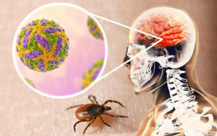

О Всероссийской горячей линии по профилактике клещевого энцефалита и инфекций, передающихся клещами
Управление Роспотребнадзора по Смоленской области информирует, что с 27.04.2026 по 10.05.2026 организована работа тематической горячей линии и консультаций по профилактике клещевого энцефалита и инфекций, передающихся клещами.